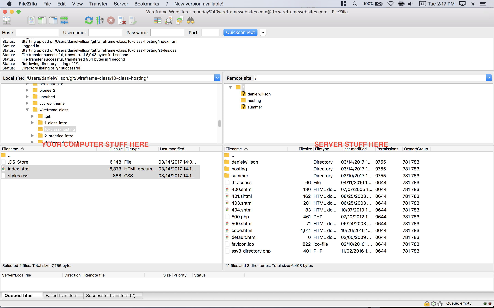

Domains, Hosting, and FTP
Please complete this before we meet on Sunday, March 19!
First, please update the attendance sheet.
I know we haven't updated this in awhile - please go back and make sure it's all up to date. Please also put in an "N" for classes you didn't come to. Thanks!
Wireframe: Here's the link.
Wireframe CS: Here's the link.
How does the Internet work?
This video is super-cheesy but actually does a pretty good job of explaining it all. It lasts 5 minutes.
What is a server?
The video touches on this a little bit - but servers are basically dumb computers with a lot of storage connected directly to the Internet. Servers are “the cloud”. Data centers are filled with hundreds and often thousands of these computers. They look like this - you’ve definitely seen one in a movie before:

What’s hosting?
Hosting is essentially you “renting” some company’s server. Popular hosts include GoDaddy, Bluehost, Amazon (AWS), etc. You could just host your website on your own computer, and then whenever they visit their site they’d be literally viewing the files off of your own computer. But - that isn’t very secure for you and your other files, it’d make your computer fairly slow all the time, your computer would have to be on 24/7, always connected to the Internet, and the page load times would be really slow.
Hosting essentially gives you access to a fast server directly connected to the Internet where you can put all your files. We’re using Bluehost for this class. Very basic hosting (which is all you need for a basic personal site) only costs $60-70/year.
If you need to build fully-functional web applications and/or have a TON of traffic, then there are better, more expensive options. Most notably is Amazon’s AWS (Amazon Web Services) which powers a substantial portion of the entire Internet.
What is FTP?
FTP is an acronym for File Transfer Protocol. As the name suggests, FTP is used to transfer files between computers on a network. You can use FTP to exchange files between computer accounts, transfer files between an account and a desktop computer, or access online software archives. Keep in mind, however, that many FTP sites are heavily used and require several attempts before connecting.
FTP is an easy way to directly connect to your hosting account’s server and upload your website files. That’s what we’re going to do in a minute so that you can get your stuff online.
What are domains?
Every device connected to the Internet - every computer, phone, server, router, etc - has a unique IP (Internet Protocol) address. Think of it as the home address for that device. UVA server’s IP address is 128.143.22.36, for example. Try copy/pasting that into your address bar as if it’s a website - you’ll see it just pulls up UVA’s site.
Now it would suck if your email address had to be dlw9af@128.143.22.36, or if anytime you wanted to go to UVA’s site you had to type in 128.143.22.36. That’s not exactly catchy or easy to remember.
Domains are things like facebook.com, virginia.edu, and danielwillson.com. They’re created to “mask” IP addresses with something more human-readable and human-rememberable. If you own a domain, you control what IP address it goes to. UVA owns virginia.edu, and they point it at 128.143.22.36.
Whenever you type in virginia.edu, it goes to a Domain Name Server (DNS) somewhere close to you. DNS is essentially the phonebook of the Internet - it’s a big directory that translates virginia.edu into 128.143.22.36. Once it gets the IP address, it actually knows where to find the website files you’ve asked for. So it goes to 128.143.22.36 where it finds all the website files for UVA. Then it opens those files and sends them back for you to view in your browser.
This is a bit of an oversimplification, but all of this really does happen within the split second of you hitting “enter” on your keyboard and the website appearing on your screen.
Anyone can buy domains. They cost usually $10-20/year. Pretty much all hosting companies also sell domains, so they’re most frequently bought together. That’s what we did with Bluehost. But you can also buy domains from companies that just sell domains and don’t do hosting. These are called domain registrars.
We’ve purchased a domain and hosting account for you all to use for the duration of this program.
We purchased wireframewebsites.com and a hosting account from Bluehost for you all to use.Before Sunday, we want you to upload something (it can be any of our previous assignments, or something new) to our hosting account via FTP.
The reason we can’t do this in class is because if 20 people try to connect via FTP at the same time Bluehost will think someone is trying to hack into our website and block some of you. (We found this out the hard way last semester.)
Here’s how to do it:
1) Download FileZilla, an “FTP Client” - this is basically an app that lets you connect to hosts via FTP.
2) Open FileZilla, and type in the login info along the top bar.
I put this info in Slack since the info is sensitive and I don't want it to be public on the Internet, like this page is.
3) Upload files.
On the left side of your screen are your computer’s files. You’ll want to navigate to the folder where all your Wireframe files are kept.
On the right side of your screen is all of the files on the server. Double click public_html to open that folder. Then right click anywhere and hit “Create directory” - this will make a new folder. Name it with your full name, no spaces, all lowercase. Like “danielwillson”.
Open that folder (still on the right side, on the server), and then drag in an index.html and styles.css file. (Pick whichever ones you want.) Make sure to upload any images you used as well. It’ll take a minute for them to show up on the right as they’re being uploaded.
4) Visit them online!
Go to wireframewebsites.com/danielwillson/ (replace my name with your name) and you should see your files!
Slack me if it doesn't work for you.